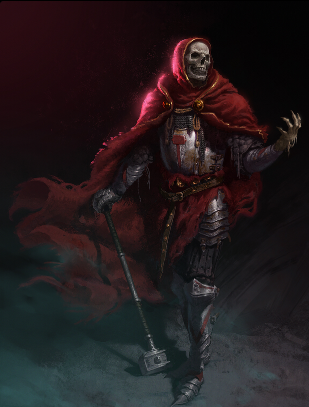

Force

Résistance

Dextérité

Magie
Ingénierie
Environnement : Tertres-du-Temps - Cimetière des noyés - étendues
Durée de vie moyenne : Jusqu’à ce que le corps ne puisse plus se porter
Taille : M
Système politique : Aucun
Statut politique : Affilié aux ordres de Ga'ar ou errant
Relations hostiles : Si il y a, celui ou celle qui lui a ôté la vie
Alliés : Aucun défini, mais peuvent faire alliance avec tous les peuples sous les ordres de Ga'ar
Croyance : Ga'ar
Force
Résistance
Dextérité
Magie
Ingénierie
Capacités innées : Résistance à la douleur et aux maladies
Facilités magiques : Nécromancie
Impossibilités : Lumière et magies pures ou basées sur le vivant
Que reste-il après notre mort ? De la chair, des ossements, des souvenirs ? Nous disparaissons, notre bout de chemin sur les voies de l’Yndrill se voit coupé, tout comme notre carcasse dûment rentabilisée par les rats et les rapaces. Pourtant, Ga’ar permet une autre approche de la finalité, voir notre corps se décomposer tout en restant droit comme un piquet. Chanceler, saigner, gronder, gémir ; être conscient dans la mort, dans l’effusion de notre propre trépas. Ainsi, aux Tertres-du-Temps et quelquefois ailleurs, les corps s’animent, dansent, tirés par des fils imperceptibles, ils déambulent, régulièrement trébuchent, mais se relèvent et jamais ne périssent. De la chair, de la putréfaction, parfois plus que quelques os, repoussés par l’écho d’un ordre supérieur ; par la non-mort, la malédiction d’un paradoxe, bloquant une charogne entre deux mondes.
Profil type : Mélancolique - Peiné - Souffrant - Acrimonieux
Alimentation : Chair - exclusivement carnivore
Montures : Kelpies

Un OC mourant aux Tertres-du-Temps a la possibilité, si son corps est encore exploitable, de devenir un mort-vivant. Sa race d’origine est donc croisée avec cette dernière s’imposant en quelque sorte comme un statut. Néanmoins, si le détenteur de cet OC ne souhaite ni avoir son cadavre ambulant, ni avoir un corrompu, alors il est libre de supprimer son OC pour en écrire un nouveau, ou simplement de jouer d’une telle façon qu’il ne sera pas confronté à la mort. Il est aussi possible de devenir un mort-vivant au sein les autres régions du monde, sous condition d’une mort dans un espace damné ou en étant atteint d’une malédiction. Ainsi, les morts-vivants n’ont pas de structure politique, se réunissent en groupe en fonction des raisons ou demeurent des créatures solitaires, cherchant la chaleur de corps bien vivant, de corps leur rappelant ce qu’ils furent.
Nombre d'OC de cette race sur Yndrill: -